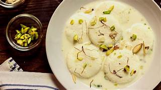

Rasmalai
Ingredients
- Milk
- Sugar
- Dry Fruits
Recipe
- First, curdle the milk using lemon juice or vinegar to make chenna and strain the water.
- Knead the chenna until smooth and shape it into small flat balls.
- Boil sugar and water to prepare syrup, then cook the balls in it until they turn soft and spongy.
- In another pan, simmer milk with sugar, cardamom, saffron, and nuts to make rabdi.
- Finally, add the cooked balls to the rabdi and refrigerate before serving.
Ingredients
- Milk
- Sugar
- Dry Fruits
Recipe
- First, curdle the milk using lemon juice or vinegar to make chenna and strain the water.
- Knead the chenna until smooth and shape it into small flat balls.
- Boil sugar and water to prepare syrup, then cook the balls in it until they turn soft and spongy.
- In another pan, simmer milk with sugar, cardamom, saffron, and nuts to make rabdi.
- Finally, add the cooked balls to the rabdi and refrigerate before serving.

Misal Pav
Ingredients
- Vegetables
- Pav
- Masalas
Recipe
- Soak and sprout the moth beans, then pressure cook them until soft.
- Heat oil, sauté onion, ginger-garlic paste, and tomatoes, then add spices to make the masala.
- Add the cooked sprouts with water and simmer to form a flavorful curry (misal).
- Serve the misal in a bowl and top it with farsan, chopped onion, coriander, and lemon.
- Toast the pav with butter and serve it hot along with the misal.